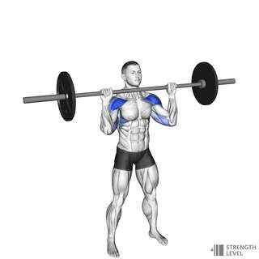
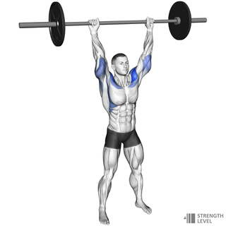
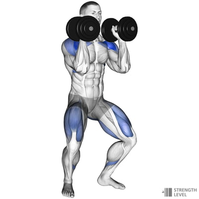
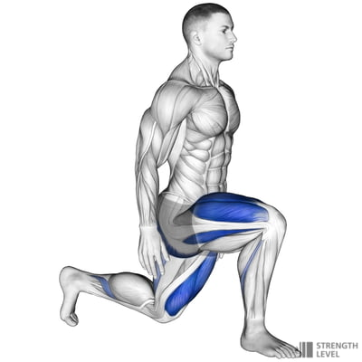
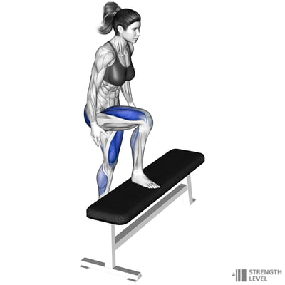
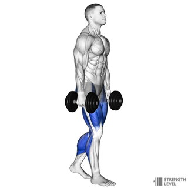
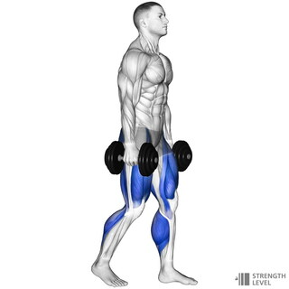

SESSION 5 OF 6 · MEDIUM INTENSITY
Press, Step & Carry
Exactly 60 minutes · barbell, dumbbells, kettlebell + box
Two controlled rounds
- 10 kettlebell deadlifts
- 8 goblet reverse lunges
- 8 alternating box step-ups
- 8 empty-bar strict presses
- 20 sec light farmer march
Brace before every press and keep the ribs stacked over the pelvis.
Barbell strict press
5Strict presses No leg drive · RPE 6–72 pictures


Use the rack if available. If lifting from the floor, clean the bar only if that movement is already comfortable; otherwise substitute double-dumbbell strict presses.
Four-minute EMOM
18 double-dumbbell push pressesDiagram

210 kettlebell goblet reverse lunges 5 per sideDiagram

310 alternating box step-upsDiagram

440 sec dumbbell farmer carry or march2 pictures


Use loads that let you maintain an upright torso and finish the first three minutes with at least 20 seconds to recover.
Reset
- 2 min easy walking
- 1 min chest stretch per side
- 1 min triceps stretch per side
- 1 min hip-flexor stretch per side
Scaling and safety
Stop pressing before the lower back arches or the bar path changes. Use bodyweight reverse lunges and step-ups if loaded balance becomes uncertain.
All six 60-minute sessions
Exercise diagrams: Strength Level.
Stop for sharp pain, dizziness, or unusual shortness of breath.
↑ Back to top